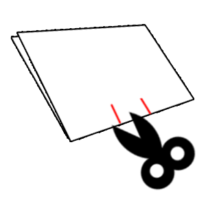

Starting from the folded edge (the bottom edge), cut a straight line about 1-2 inches long, keeping the scissors perpendicular to the fold. Then, about 1 inch to the side, cut another identical line. This creates two parallel lines at the center of the fold — when their lengths line up, they form a shape like the number "11" lying on its side.